Fun with flow models
A flow model turns noise into a picture by following a velocity, one small step at a time. In Part A I drive a pretrained one, PixNerd, to denoise, generate, edit my own photos and drawings, and make visual anagrams and hybrid images.
This is a print of afifi-yusuf.github.io/280a/proj3. On the web page the sweeps have sliders and the anagrams turn; here each is shown as a strip or as both orientations.
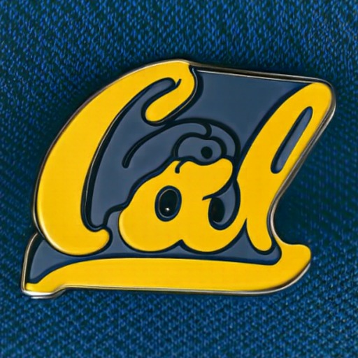
t = 0→1noise to picture
The one idea: follow the velocity
A flow model is trained on straight lines from noise to images, xt = (1 − t) x0 + t x1, and learns the velocity x1 − x0. It only sees xt, so it learns the average velocity of every pair through that point, which is why sampling paths curve and I ask the model again at every small step.
xt = (1 − t) ε + t x1
the path, t = 0 noise, t = 1 picturevθ(xt, t, c) ≈ x1 − ε
what the model predictsxt+h = xt + h · v(xt, t)
how sampling follows it, h = 0.02t = 0.25→0.75noise level
Part 1.1–1.2 · Noisy inputs and Gaussian blur
I took this picture of Mirror Lake on a trip to Yosemite in June. Here it is mixed with one noise sample at three values of t: at 0.25 only the sky and the water show through, and by 0.75 the noise is just grain.
xt = (1 − t) ε + t x1
A.1 · noisy inputx̂1blur = Gσ ∗ (xt / t)
1.2 · blur baselinedef interpolate(image, noise, t):
x_t = (1-t)*noise + t*image
return x_t
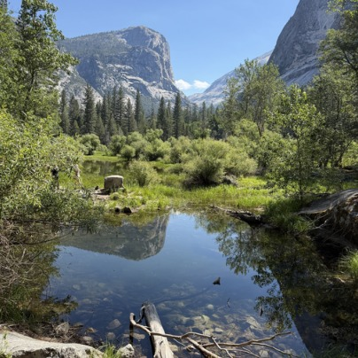


1.2 · Gaussian blur. Dividing by t and blurring averages the zero-mean noise away. The best σ grows with the noise (8, 4 and 1 for t = 0.25, 0.50 and 0.75), and at σ = 8 the lake goes with it.
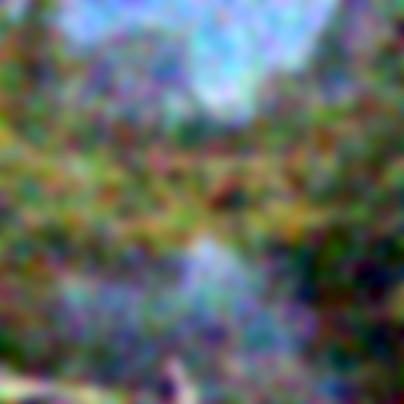
t = 0.25→0.75one step each
Part 1.3–1.4 · One-step denoising and the velocity
One step follows the predicted velocity straight to t = 1. At 0.25 everything lands in the right place but comes out smooth and painted, since a model trained on squared error predicts the average of every lake that fits; by 0.75 it is almost my photo.
x̂1 = xt + (1 − t) vθ(xt, t, c)
A.2 · one step(1 − t) vgt = x1 − xt
1.4 · the true updateEt = √ meanRGB [ (1 − t)(v̂ − vgt) ]²
1.4 · error per pixeldef one_step_denoise(x, t, condition, predict_velocity):
v = predict_velocity(x,t,condition)
x_1 = x + (1-t)*v
return x_1
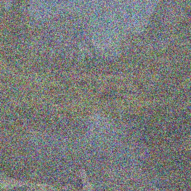


1.4 · Predicted vs. true update. The noise cancels between the two updates, so the error map is just one step vs. my photo. It looks like a Laplacian: dark in the sky and the water, bright on edges and foliage, and it thins out as t grows.
@torch.inference_mode()
def velocity_diagnostics(x_t, t, clean_image, epsilon, condition, predict_velocity):
x_1_hat = one_step_denoise(x_t, t, condition, predict_velocity)
predicted_update = x_1_hat - x_t
ground_truth_update = clean_image - x_t
error_map = torch.sqrt(((predicted_update - ground_truth_update) ** 2).mean(dim=1))
return predicted_update, ground_truth_update, error_map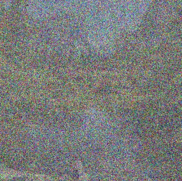
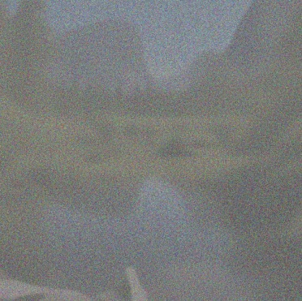
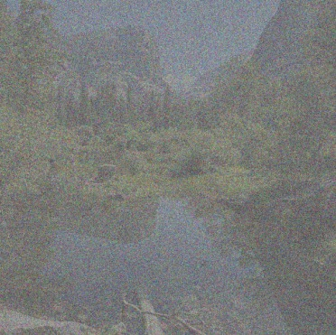
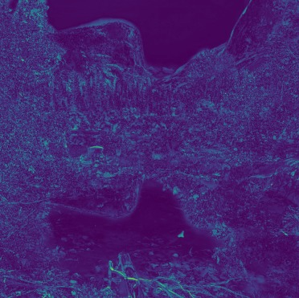
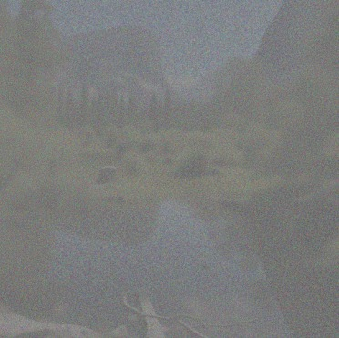
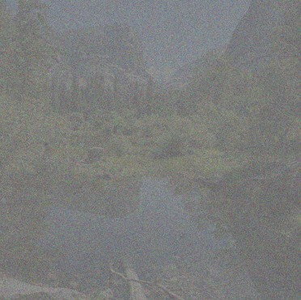
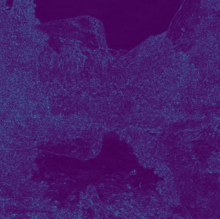
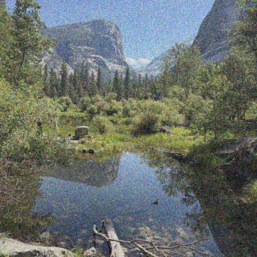
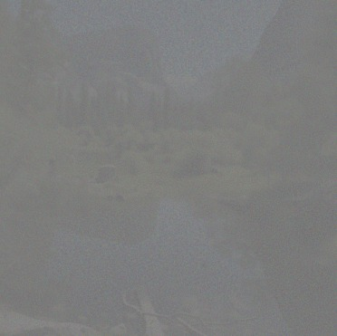
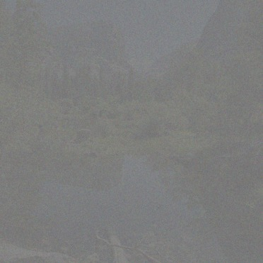
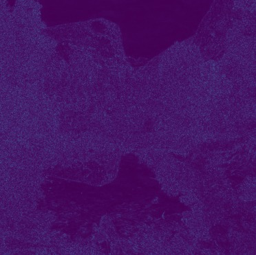
All three error maps share one colour scale, from 0 (dark purple) to the largest error over the three.
1→25Euler steps
Part 1.5–1.6 · Euler sampling, from my photo and from noise
Euler takes small steps of h = 0.02 and asks the model again each time, so it can commit to finer detail as the picture cleans up. From my photo at t = 0.5 that is 25 steps; from pure noise it makes a new image (1.6).
xt+h = xt + h · vθ(xt, t, c)
A.3 · one Euler step, h = 0.02@torch.inference_mode()
def euler_sample(x_start, t_start, step_size, velocity):
n = math.ceil((1 - t_start) / step_size - 1e-9)
x, t = x_start, t_start
states = [(t, x)]
for i in range(1, n + 1):
t_next = 1.0 if i == n else t_start + i * step_size
x = x + (t_next - t) * velocity(x, t)
t = t_next
if i % 5 == 0 or i == n:
states.append((t, x))
return x, states
Denoising Mirror Lake from t = 0.5
Drag through the 25 steps. Each frame is five steps after the last.
Blur vs. one step vs. Euler. One step has the lowest error (0.026) because it predicts the average; Euler is sharper but commits to detail that is not exactly mine (0.031); blur loses on both (0.041). Euler is the only one that looks like a photo, so it is my pick.


1.6 · Sampling from pure noise. Five unguided samples of "a high quality photo", seeds 280 to 284. Four are rough people (a man fused with a camera, a smeared face) and one is a jar of machine parts: they look like photos until you look twice.
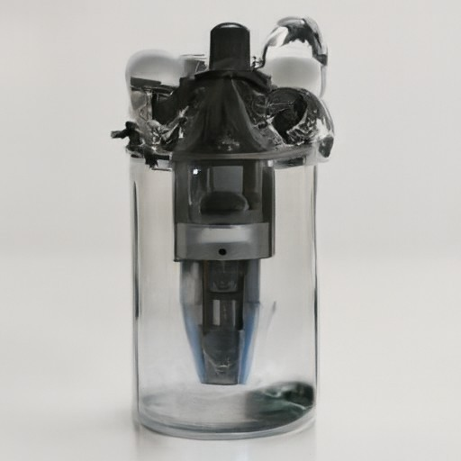
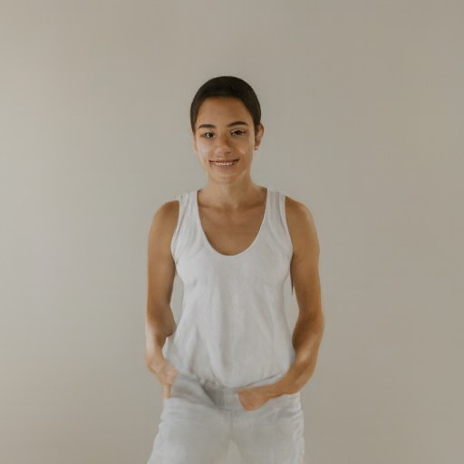
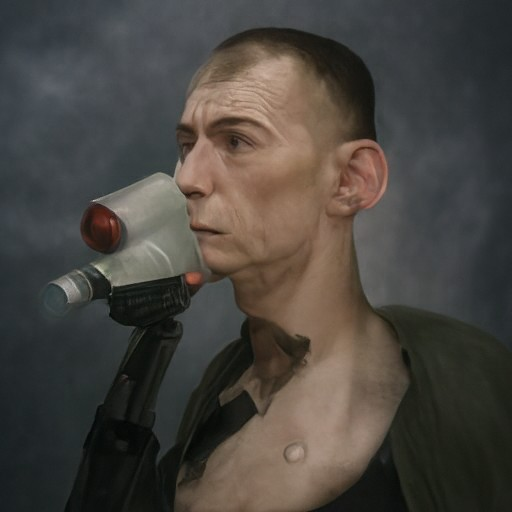
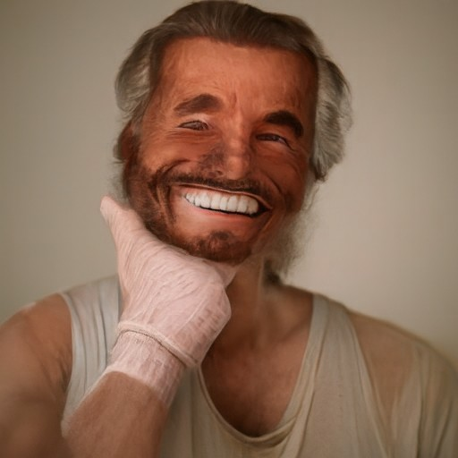
w = 0→7guidance
Part 2.1 · Classifier-free guidance
vcfg = vc + w (vc − vu)
A.4 · c = my prompt, u = the empty promptGuidance fixes that: each step uses two predictions, with and without my prompt, and pushes past the conditional one (w = 7, same noises as 1.6). Every sample becomes a clean studio portrait, even the jar, so I gain quality and lose diversity.
def cfg_velocity(x, t, condition, w, predict_velocity, null_condition=''):
v_unconditional = predict_velocity(x,t,null_condition)
v_conditional = predict_velocity(x,t,condition)
return v_conditional + w*(v_conditional-v_unconditional)
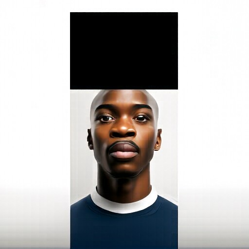
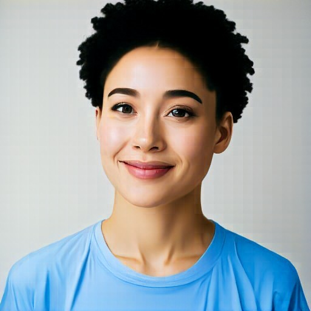
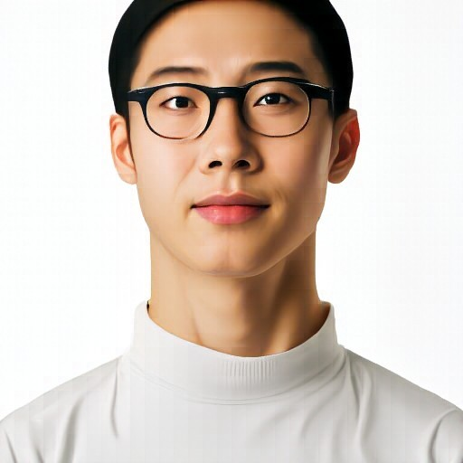
t0 = 0.02→0.5starting time
Part 3.1 · Image-to-image editing
edit noises a picture to the starting time and runs guided Euler steps to 1 with the prompt "a high quality photo". The smaller the starting time, the more noise, and the more freedom the model has to hallucinate its way back to the photo manifold. Drag each slider from left (most noise) to right.
xt₀ = (1 − t0) ε + t0 y
noise my picture y to the starting timext+h = xt + h · vcfg(xt, t)
then guided Euler steps from t₀ to 1def edit(image, noise, t_start, condition, predict_velocity, w=7, step_size=0.02):
x = interpolate(image, noise, t_start)
velocity = lambda x, t: cfg_velocity(x, t, condition, w, predict_velocity, null_condition)
final, _ = euler_sample(x, t_start, step_size, velocity)
return final
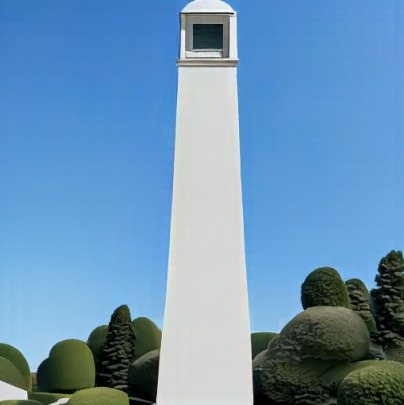
The Campanile
At 0.02 only a pale column on blue survives, and the model turns it into a pipe beside a machine. From 0.04 to 0.10 it is a smooth white tower with the right outline and no openings; the belfry comes back at 0.14 and the clock face by 0.50.
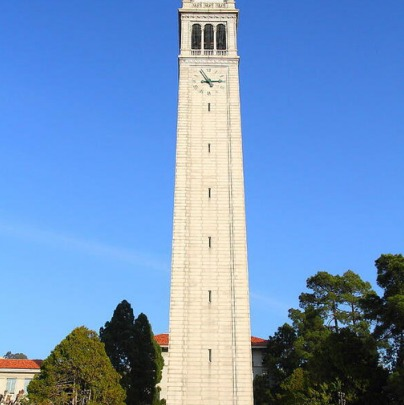
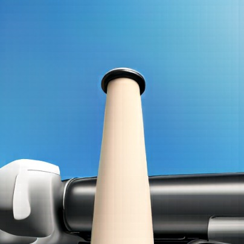
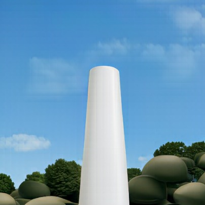
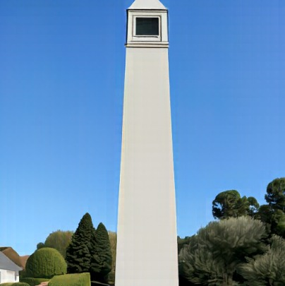
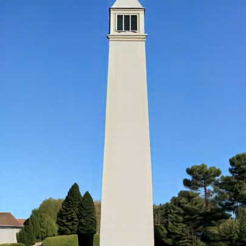
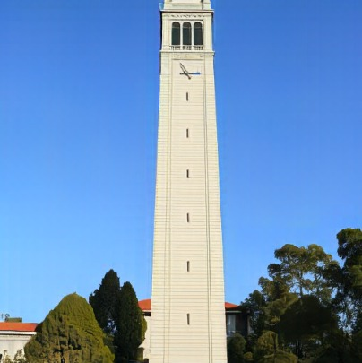
Mirror Lake, Yosemite
My lake from June. The colours survive first: at 0.02 to 0.06 they become people at laptops. At 0.10 the model keeps the low-frequency layout, water below and trees above, but hallucinates a waterfall under a sign of made-up letters. From 0.14 it is my lake again, cliff and reflection included.
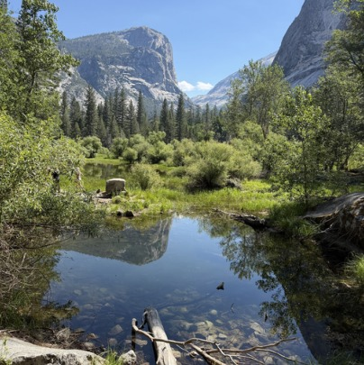
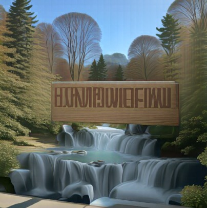
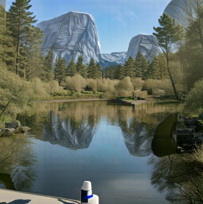
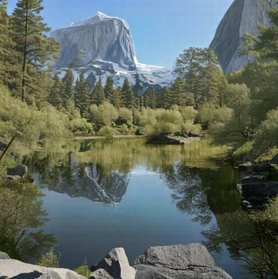
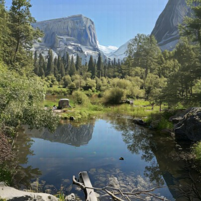
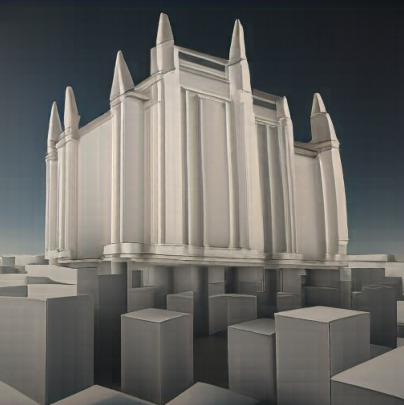
The Duomo, Milan
I took this one at night on my high school graduation trip to Milan a few years ago. The model's first guesses are a man's portrait at 0.02 and an appliance at 0.04 to 0.06, both in the night palette. At 0.10 and 0.14 it is a plain white cathedral with the right spires; the tracery and the crowd return at 0.25.
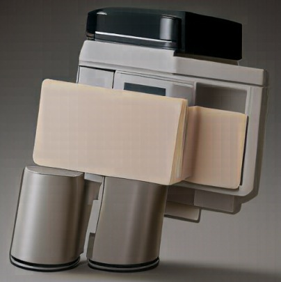
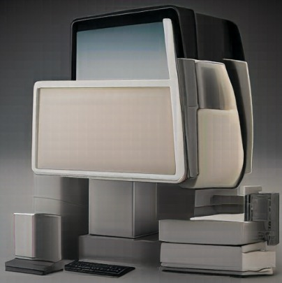
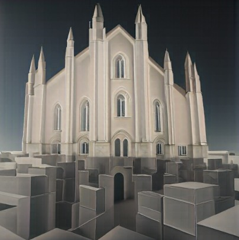
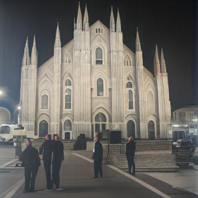
Web image and hand drawings. Here the model should pull a non-photo onto the photo manifold.
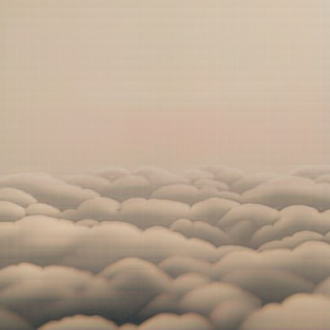
Web image: Pyramids of Gizeh
I'm from Egypt, so the pyramids were the obvious pick. Louis Haghe's 1838 lithograph is almost one beige tone, so at early starting times the model keeps only its first-order statistics, the colour: a woman at a laptop, a cream living room, a sea of clouds. By 0.25 it finds sand dunes, and the pyramid itself returns at 0.50.
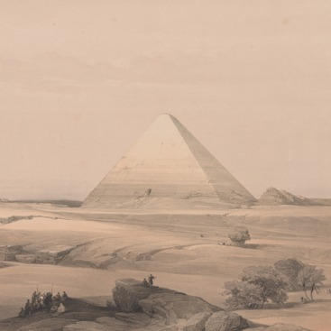
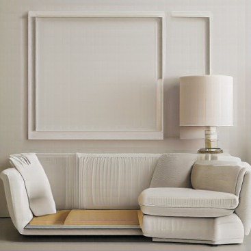
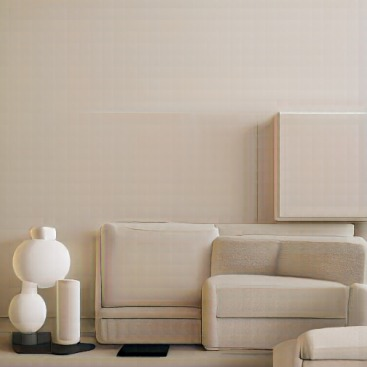
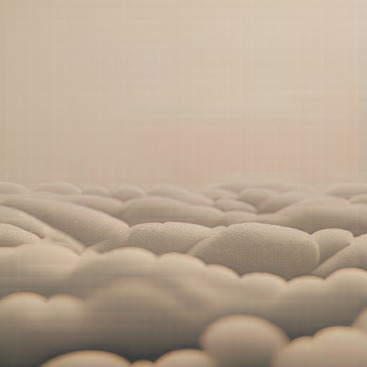
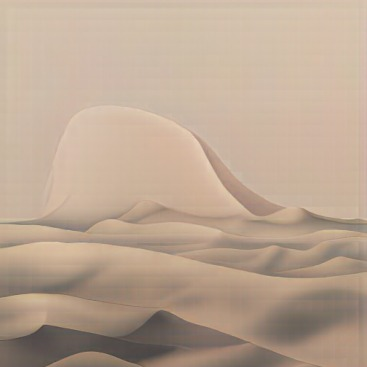
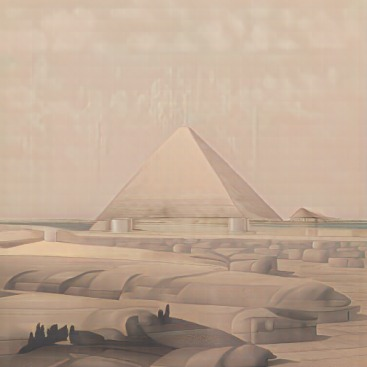
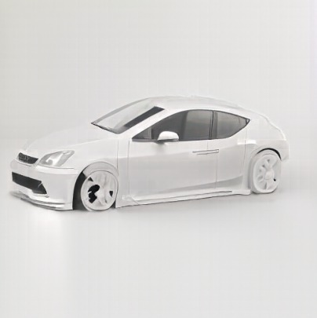
My drawing: a Porsche 911
My dream car, a red 911, in coloured pencil. At 0.02 to 0.06 the white paper wins and I get a laptop and a hand; from 0.10 to 0.25 it is a real car in my drawing's pose, but white, since the paper dominates the colours, and by 0.50 it is a sketch again.
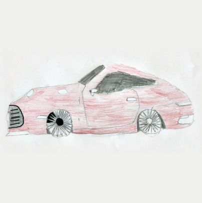
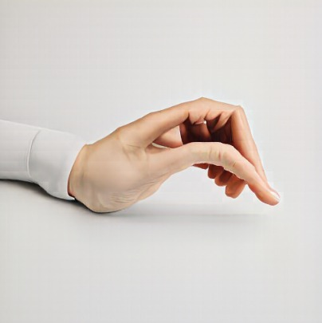
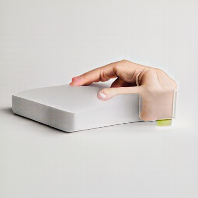
My drawing: Jaws
Jaws was one of my favourite movies when I was younger. Sadly, the shark never becomes a shark. The model does pick up the blue, and at 0.25 the water becomes a real ocean.
t0 = 0.02→0.5starting time
Part 3.2 · Text-guided image editing
The same procedure with my own prompt in place of "a high quality photo". The prompt describes the picture I want, not an instruction: the model matches a caption.
Campanile, a photograph of Big Ben in London
At 0.02 to 0.10 the prompt wins outright: Big Ben with the Houses of Parliament. At 0.14 Big Ben's clock and spire stand in the Campanile's sky beside its trees, the hybrid I was after: Big Ben at Berkeley. By 0.50 it is the Campanile again.
Mirror Lake, a photograph of a mountain lake in autumn with bright orange and red trees
The progression is the interesting part: the lower the starting time, the more orange. At 0.02 to 0.06 it is a generic alpine lake lined with orange larches; at 0.10 and 0.14 it is my lake, with orange trees and orange reflections; at 0.25 only a hint of autumn is left.
The Duomo, a photograph of a cathedral built from Lego bricks at night
The outcome was really cool here. Even at 0.02 and 0.04 the model keeps the structure of the Duomo, not just any cathedral, and it looks like a real Lego set. From 0.25 it is the photo again, crowd included.
0°→180°rotation
Part 3.3 · Visual anagrams
Visual anagrams come from arithmetic on velocities: at every step I average the guided velocity for the picture as it is and the guided velocity for the picture turned upside down, with a second prompt, turned back. Hover over or tap a picture to turn it. Hover over or tap a picture to turn it.
v = ½ [ vcfg(xt, t, p1) + F( vcfg(F(xt), t, p2) ) ]
F turns the picture 180°def visual_anagrams(noise, condition_a, condition_b, predict_velocity, w=7, step_size=0.02):
def velocity(x, t):
v1 = cfg_velocity(x, t, condition_a, w, predict_velocity, null_condition)
v2 = rotate180(cfg_velocity(rotate180(x), t, condition_b, w, predict_velocity, null_condition))
return (v1 + v2) / 2
final, _ = euler_sample(noise, 0, step_size, velocity)
return final
1×→8×distance
Part 3.4 · Hybrid images
Taking inspiration from Project 2's hybrids, I make pictures that look different up close and from far away by adding the low-pass velocity of one prompt to the high-pass velocity of another, split by a Gaussian with σ = 16.
v = Gσ ∗ v1 + (v2 − Gσ ∗ v2)
low frequencies of prompt 1, high of prompt 2, σ = 16def highpass(x, sigma=16.0):
return x - lowpass(x, sigma)
def make_hybrids(noise, condition_a, condition_b, predict_velocity, w=7, step_size=0.02):
def velocity(x, t):
v1 = cfg_velocity(x, t, condition_a, w, predict_velocity, null_condition)
v2 = cfg_velocity(x, t, condition_b, w, predict_velocity, null_condition)
return lowpass(v1) + highpass(v2)
final, _ = euler_sample(noise, 0, step_size, velocity)
return final
Drag a slider to walk away from that picture: it shrinks the way distance does.
Forest and face ("a lithograph of an old man's face" far, "a lithograph of a pine forest" close). Up close it is a ring of pines; at 64 px the dark trunks and the gap between the trees settle into a face. Leaves and lion ("an oil painting of a lion's head" far, "an oil painting of autumn leaves" close) reads more strongly: maple leaves up close, a lion's head and mane from a distance.
0°→90°rotation
Visual anagrams with other viewsBells & whistles
Different arithmetic gives more visual anagrams. A view has to be an exact pixel permutation, so that noise stays noise from every view and the model sees the inputs it was trained on. I used a 90° rotation and an inner-circle rotation, which turns only a central disc. The owl is my favourite: only the centre changes and the ring stays put, purely from arithmetic on velocities.
v = ¹⁄N Σi Vi−1 vcfg(Vi xt, t, pi)
each view V a pixel permutationdef multiview_anagram(noise, conditions, views, w=7, step_size=0.02):
def velocity(x, t):
vs = [inv(cfg_velocity(f(x), t, c, w, predict_velocity, null_condition))
for (f, inv), c in zip(views, conditions)]
return sum(vs) / len(vs)
final, _ = euler_sample(noise, 0, step_size, velocity)
return final
rot90 = (lambda x: torch.rot90(x, 1, (-2, -1)), lambda x: torch.rot90(x, -1, (-2, -1)))
disc = (((yy - 255.5) ** 2 + (xx - 255.5) ** 2) < 200 ** 2).to(device)
inner = (lambda x: torch.where(disc, torch.rot90(x, 1, (-2, -1)), x),
lambda x: torch.where(disc, torch.rot90(x, -1, (-2, -1)), x))
t0 = 0.10→0.40starting time
Course logoBells & whistles
PixNerd can't spell, so I added "CS 280A" under the Cal and Oski logos myself and prompted a neon sign and an embroidered patch. Texture is an easy change for the model, and from t = 0.15 the letters hold.
a photograph of a glowing gold and white neon sign on a dark blue brick wall at night
My pick is 0.15: glossy gold tubes and a brick wall, with every letter intact.
a photograph of an embroidered patch of a smiling cartoon bear in a blue cap, gold and navy thread
My pick is 0.20: visible stitching, "CAL" still legible on the cap.
Logo anagram: Cal turned upside down is a bear. I combined the two ideas: edit's noisy start keeps the letters, and the anagram velocity pushes the turned view toward "a gold and navy blue enamel pin of a cartoon bear's face" (the upright prompt asks for cursive lettering). From the plain Cal start the bear is clearest at t = 0.05. Adding a faint upside-down Oski to the start gives the best balance at 0.10.
w→t0two knobs
What I learned
Flow matching only ever trains noise → image, but starting from any xt lets the same model reconstruct, edit and invent. And simple arithmetic on velocities goes surprisingly far: amplify one for CFG, average two flipped ones for anagrams.